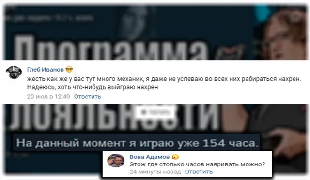
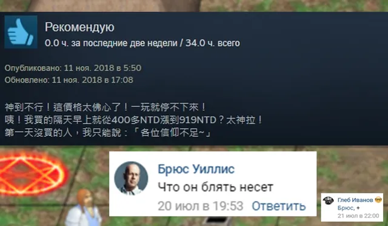
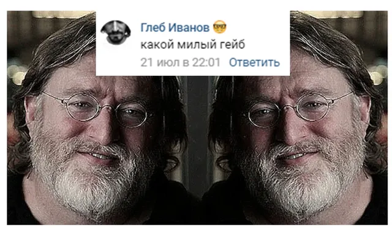
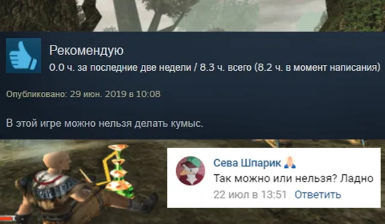
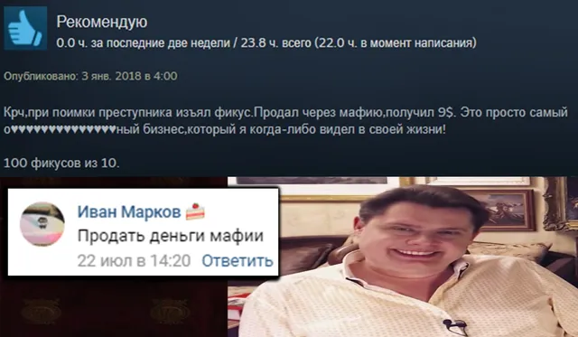
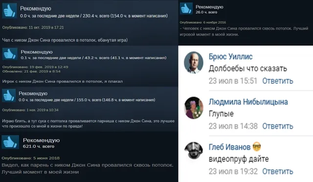
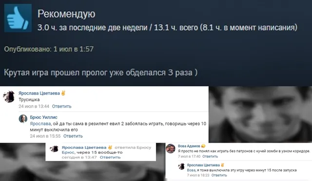
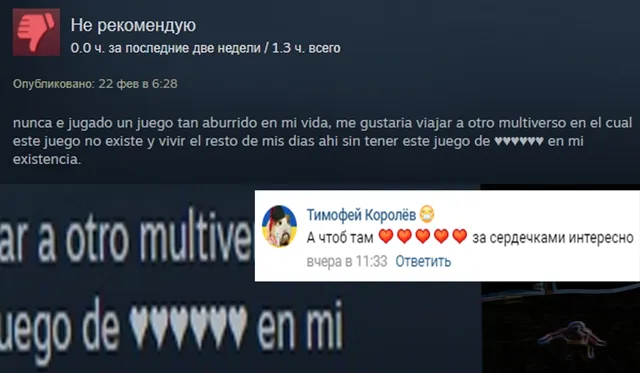

Ваши комментарии
ВКонтакте
А вот и лучшие комментарии за прошедшую неделю,
26 июля 2020 · №258 в выгрузке стены · оригинал во ВКонтакте ↗









#ВашиКомментарии@criticssteam #2
А вот и лучшие комментарии за прошедшую неделю,
Титул [https://vk.com/@criticssteam-sistema-titulov|Комментатора] сегодня получают:
[id119602395|Вова Адамов]
[id491132613|Брюс Уиллис]
[id191917835|Глеб Иванов]
[id357362016|Сева Шпарик]
[id408336490|Иван Марков]
[id284440935|Никита Лагуткин]
[id355653583|Тимофей Королёв]
А также титул [https://vk.com/topic-196461758_41480417|Критика] получает [id491132613|Брюс Уиллис]!
Всем большое спасибо за оставленные комментарии и проявление любой другой активности в сообществе, этим самым вы нас очень сильно поддерживаете и мотивируете продолжать делать качественный контент на ежедневной основе!
А вот и лучшие комментарии за прошедшую неделю,
Титул [https://vk.com/@criticssteam-sistema-titulov|Комментатора] сегодня получают:
[id119602395|Вова Адамов]
[id491132613|Брюс Уиллис]
[id191917835|Глеб Иванов]
[id357362016|Сева Шпарик]
[id408336490|Иван Марков]
[id284440935|Никита Лагуткин]
[id355653583|Тимофей Королёв]
А также титул [https://vk.com/topic-196461758_41480417|Критика] получает [id491132613|Брюс Уиллис]!
Всем большое спасибо за оставленные комментарии и проявление любой другой активности в сообществе, этим самым вы нас очень сильно поддерживаете и мотивируете продолжать делать качественный контент на ежедневной основе!